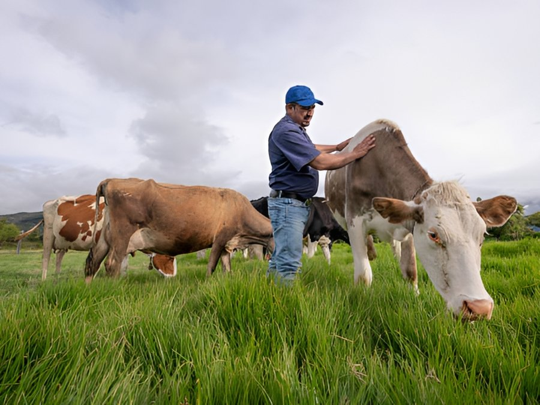

Ganaderos
Pequeños y medianos productores — hatos de entre 70 y 90 cabezas de ganado — que hoy registran salud, vacunas y gastos en cuadernos, hojas sueltas o apps genéricas no pensadas para el campo.
- Registro individual de cada animal
- Calendario sanitario y de vacunas
- Alertas automáticas
- Control económico del hato